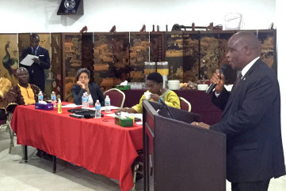
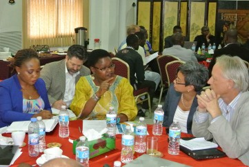
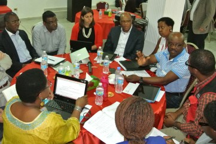

  
In May 2015, A4AI collaborated with the Liberian Ministry of Post and Telecommunications, the Liberian Telecommunications Authority, USAID, and NetHope to host the Access to Broadband Connectivity in Liberia
in the Post-Ebola context:
A Roundtable with Public, Private and Civil Society Sector Stakeholders event in Monrovia. It brought public, private and civil society sector stakeholders together in order to examine the impact of Ebola on future investment in the digital economy, as well as to articulate a commitment toward collaboration and coordination in the sector.
In November 2015, A4AI signed an MOU with the Ministry of Posts and Telecommunications. The team is now working closely with the Ministry in the development of Liberia’s ICT policy strategy, including leading public consultations with stakeholders in five regions of the country.